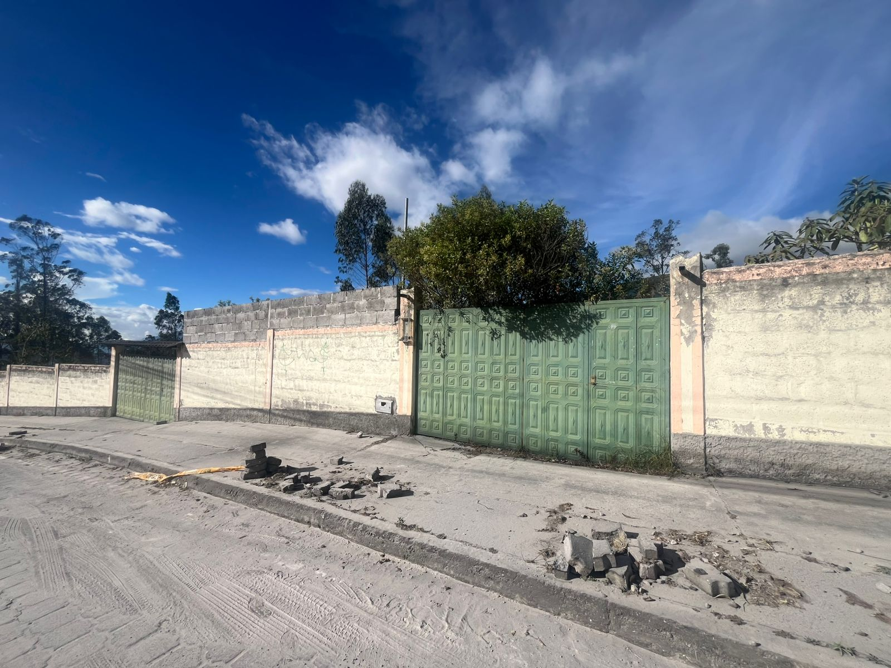
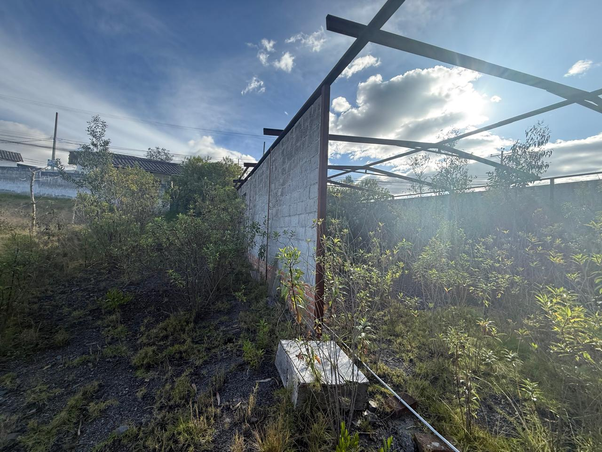
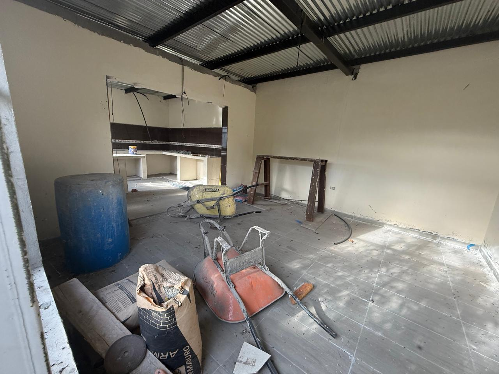
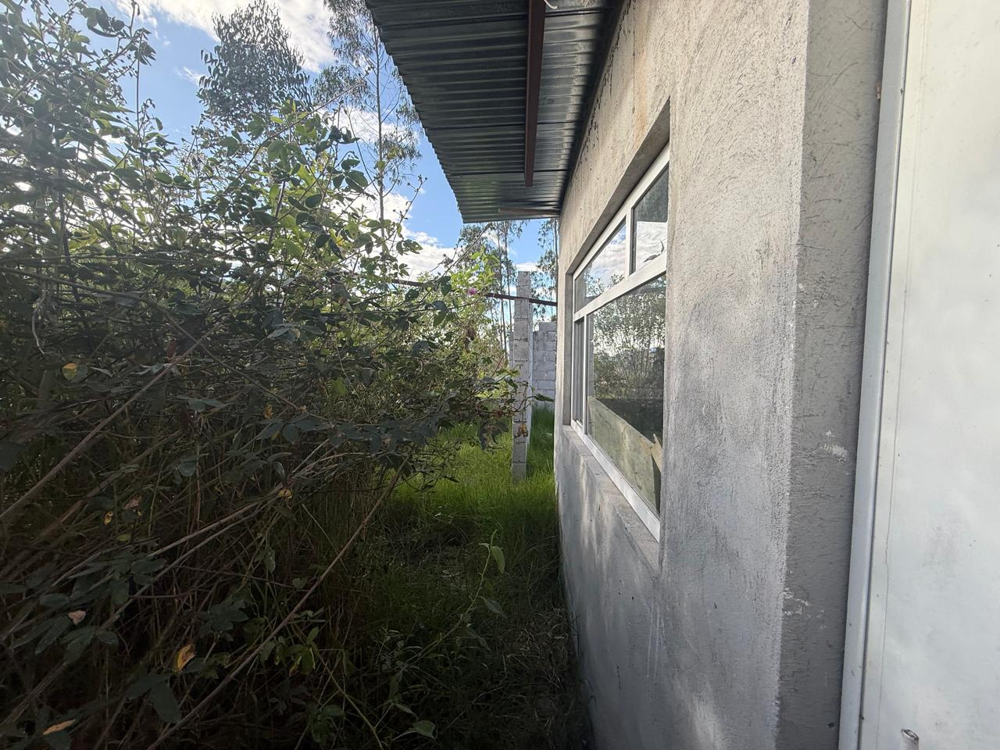

← volver al mapa
Terreno - EC-RJ-156257
EC-RJ-156257 · terreno · IBARRA, Imbabura




Datos del remate
| Avalúo pericial | $77,348 |
| Tipo de bien | terreno |
| Área de construcción | 381.60 m² |
| Área de terreno | 223.12 m² |
| Cantón / Provincia | IBARRA, Imbabura |
| Dirección / Sector | La esperanza. calle galo plaza lasso, sector urbano de la parroquia la esperanza cantón ibarra, provincia de imbabura |
| Señalamiento | Primer Señalamiento |
| Fecha de remate | 2026-09-29 |
| No. de proceso | 10333202201456 |
Análisis vs. mercado
| Avalúo por m² | $347/m² |
| Mediana de mercado en la zona | $47/m² |
| Descuento vs. mercado | -637.2% |
| Comparables usados | 83 |
| Radio de búsqueda | 2000 m |
| Puntaje | 42/100 |
Descripción completa del avalúo
bien inmueble conformado por un terreno de forma irregular conpendiente leve el cual se encuentra con la presencia de las siguientes obrasciviles:a1. construcción de mampostería de bloque y cubierta metálica.a2. construcción de bloque trabado con cubierta de zinc con viguetasmetálicas, en proceso de construcción de acabados, la vivienda no seencuentra habitada. mantiene los espacios de dormitorio, sala comedor ycocina, mantiene pisos de cerámica con paredes masilladas.a3. obra en proceso de construcción, se evidencia cadenas de hormigónarmado y paredes de bloque.a4. bodega con pardes de bloque trabado y cubierta de zinc
bien inmueble conformado por un terreno de forma irregular con pendiente leve el cual se encuentra con la presencia de las siguientes obras civiles: a1. construcción de mampostería de bloque y cubierta metálica. a2. construcción de bloque trabado con cubierta de zinc con viguetas metálicas, en proceso de construcción de acabados, la vivienda no se encuentra habitada. mantiene los espacios de dormitorio, sala comedor y cocina, mantiene pisos de cerámica con paredes masilladas. a3. obra en proceso de construcción, se evidencia cadenas de hormigón armado y paredes de bloque. a4. bodega con pardes de bloque trabado y cubierta de zinc
calle galo plaza lasso, sector urbano de la parroquia la esperanza cantón ibarra, provincia de imbabura
Límites: lote de terreno signado con el número cuatro situado en la calle galo plaza lasso, sector urbano de la parroquia la esperanza cantón ibarra, provincia de imbabura comprendido dentro de los siguientes linderos: norte, en tres metros treinta centímetros, con varios propietarios; sur, en trece metros, cincuenta centímetros, con calle galo plaza lasso; este, en cincuenta y dos metros ocho centímetros, con lote número cinco y en treinta y siete metros, con propiedad de oswaldo pinto torres; y oeste, en setenta y tres metros, treinta centímetros con lote número tres. con una superficie de mil doscientos veinte y tres metros cuadrados, doce decímetros cuadrados (1223.12m2)
Clave catastral: 10015432003005000000000
Análisis de inversión
✕ Mala oportunidadEl sistema calcula un precio muy por encima del mercado (más de 7 veces comparables) — posible anomalía de datos, dado que varias de las construcciones están en proceso, sin terminar y sin habitar.
En contra:
- Muy por encima del mercado (posible anomalía)
- Construcciones sin terminar, deshabitadas
Análisis elaborado a partir de la descripción del avalúo — no es asesoría legal ni financiera.
Esta ficha es una copia de lo publicado en el sitio oficial de remates
judiciales de la Función Judicial del Ecuador, para consulta — no
reemplaza el expediente judicial. remates.funcionjudicial.gob.ec no da
un link propio por remate, por eso se generó esta página aparte.
Antes de ofertar, el expediente debe revisarlo un abogado.